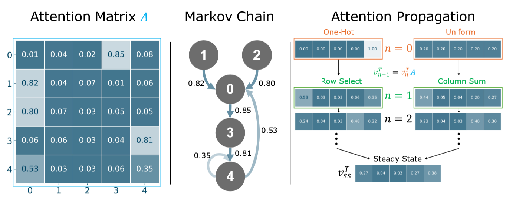

Toy Example
Left: Attention matrix A with sequence length 5. Middle: A DTMC with transition probabilities defined by matrix A, where only strong connections are shown. Right (One-Hot): To evaluate where state-4 attends to, we can iterate using the power method once starting from a one-hot vector (n=0), which results in the row-select operation (n=1). However, this first-order approximation is insufficient since state-0 mostly transitions to state-3 and, therefore, state-4 indirectly attends state-3. This becomes evident as we iterate further (n=2). Right (Uniform): To compute a global token ranking, we can iterate starting from a uniform state (n=0), resulting in a per-column sum operation (n=1). This indicates state-0 as most important because many states have a high probability of transitioning into state-0. However, state-0 maps to state-3 with high probability, and state-3 maps to state-4 with high probability. Therefore, the importance of state-4 should be elevated. When considering the second bounce (n=2), more probability mass is directed into state-3, and with a sufficient number of iterations the steady state ranks state-4 as the most important state globally, which aligns with the intuition above.